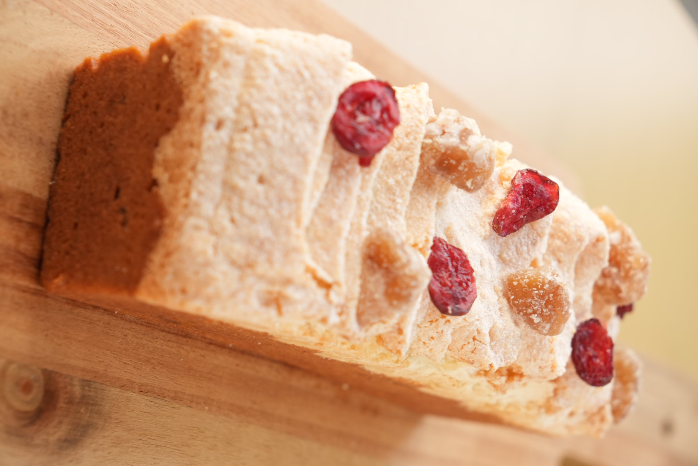
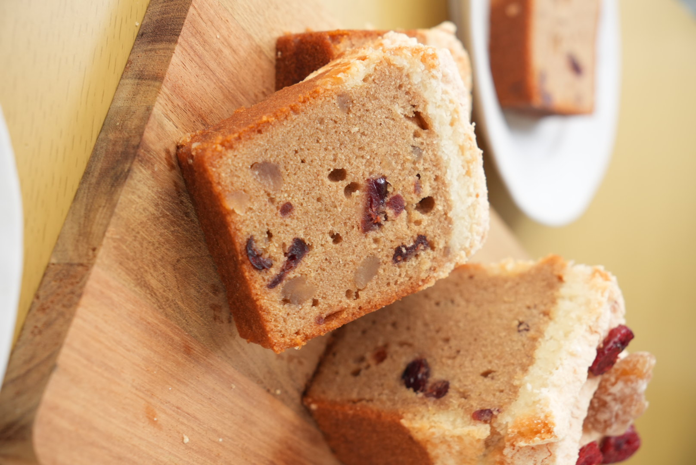
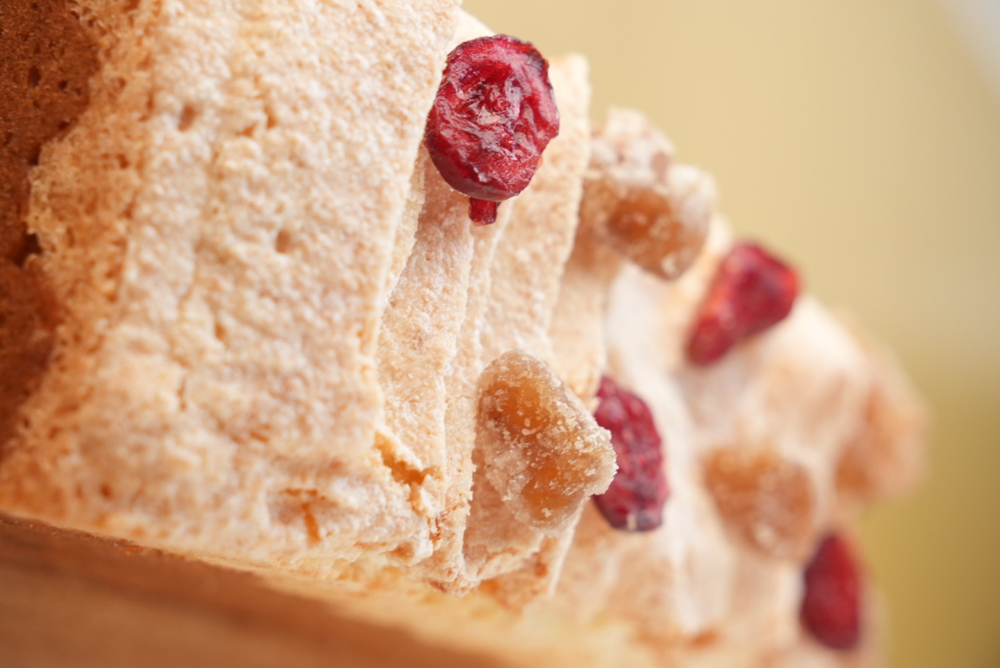
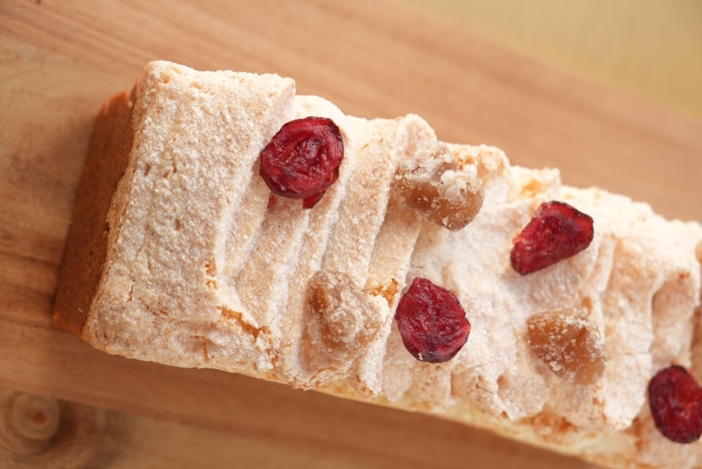
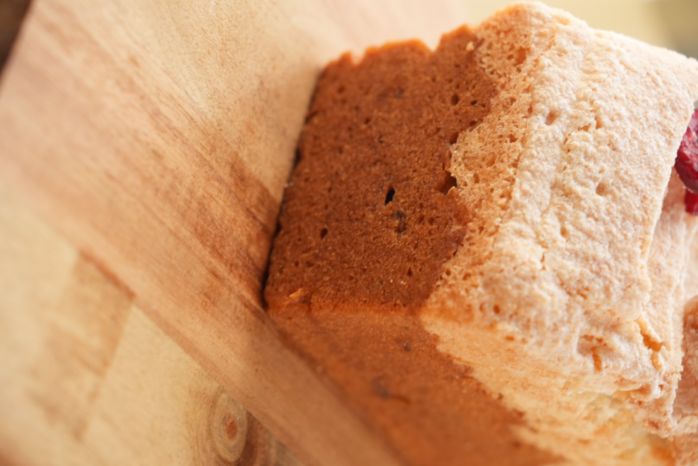
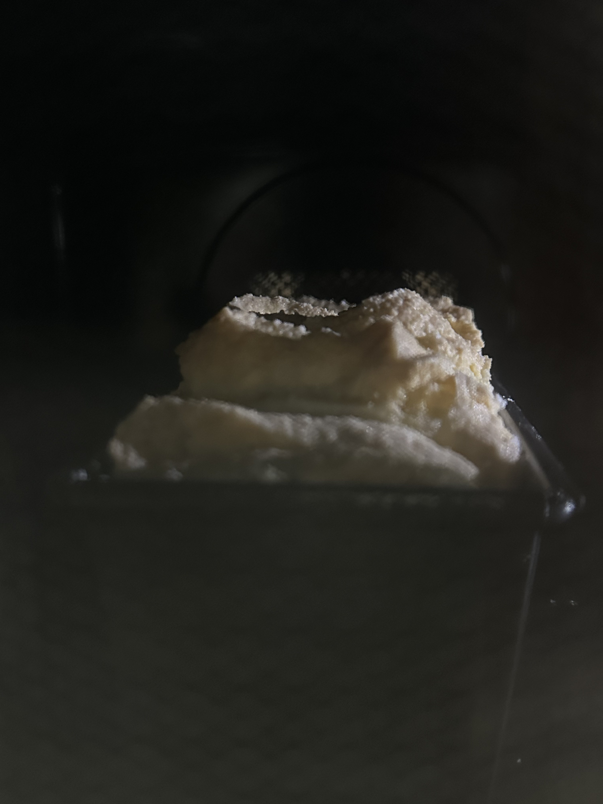
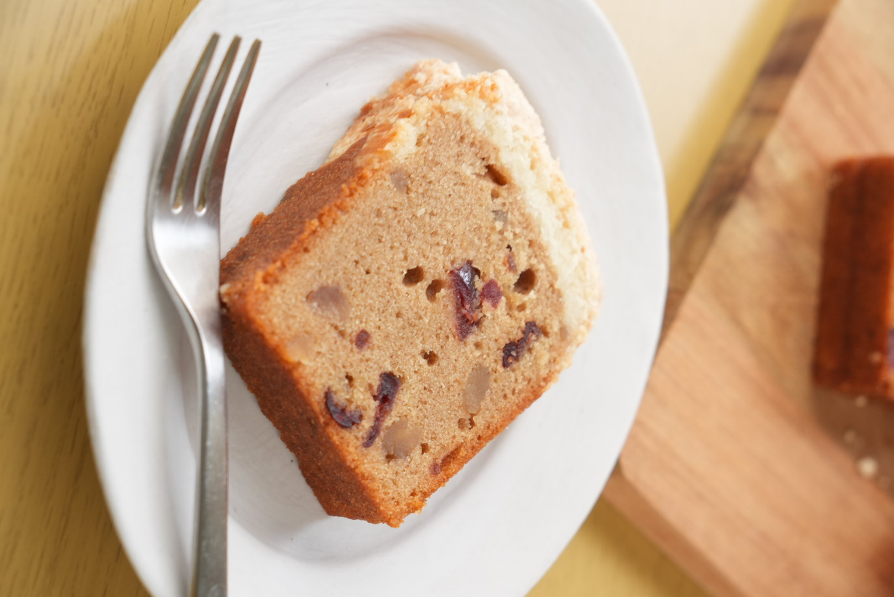
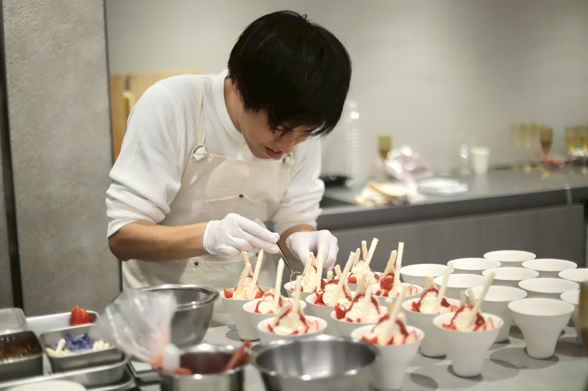

10.8木
「ケークマロンココ」
メインレッスン

栗と、ココナッツ。
秋の、とっておき。
CAKE MARRON COCO
ケークマロンココ
ONLINE LESSON / OCTOBER 2026

しっとり、栗。
ときどき、クランベリー。

サクサクのダコワーズに、
ココナッツのやさしい香り。

栗のほっこりした風味に、
クランベリーのきゅっとした酸味。
甘さの中にリズムをつくる、
小さなアクセント。
このふたつを、どうやって一緒に焼く？

しっとり焼きたい、栗のケーク。
香ばしく焼きたい、
ココナッツダコワーズ。
求める焼き上がりは、少し違う。
そのふたつを、ひとつの型に重ねて。
同じオーブンで、一緒に焼き上げます。

レシピに書けるのは、材料と手順まで。
生地の状態、混ぜ終わりの見きわめ、
オーブンの中で起きていること。
文字だけでは伝わらないところまで、
一緒に見て、確かめていきます。
食べたい分だけ、切り分けて。
ゆっくり楽しむ、秋のおやつ時間。

TOTTO SWEETS / ONLINE LESSON
作る前に、まず知ることから。
手の動きと、その理由をじっくりと。
10.8木
メインレッスン
10.9金
エクストラレッスン
Zoomライブにて、11:00スタート。
TOTTO SWEETS
のぶ
1988年生まれ、埼玉県在住。
高校卒業後、製菓専門学校へ進学し、お菓子の世界へ。
パティシエとして16年間、ホテルや街場の洋菓子店などで修行を重ねる。
2023年よりSNSでの発信を開始。
培ってきた技術や経験を、家庭でも再現できる形で伝えたいと、2024年よりオンラインお菓子教室をスタート。
感覚ではなく、
理由がわかるお菓子づくり。
この考え方を軸に、おいしさと再現性を大切にしたお菓子づくりを伝えている。
2025年には、主婦の友社より料理のレシピ本を出版。
現在はオンラインレッスンを中心に、レシピ開発や講師活動も行う。
お菓子を通して、つくる楽しさと、おいしさのその先にある可能性を届ける活動。

わかるって うれしい。
できるって たのしい。
おいしさの、その先へ。
生地を見て、理由を知る。
講義で深めた理解を、
あなたのキッチンで焼くひと切れへ。
受付開始は決まりしだいお知らせします。
レッスンの詳細を見る料金・開始時刻・お申し込み方法は、詳細公開時にご案内します。